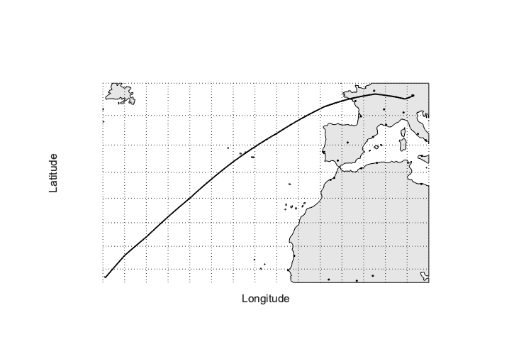
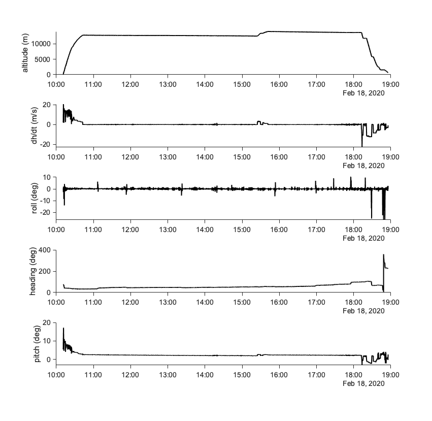
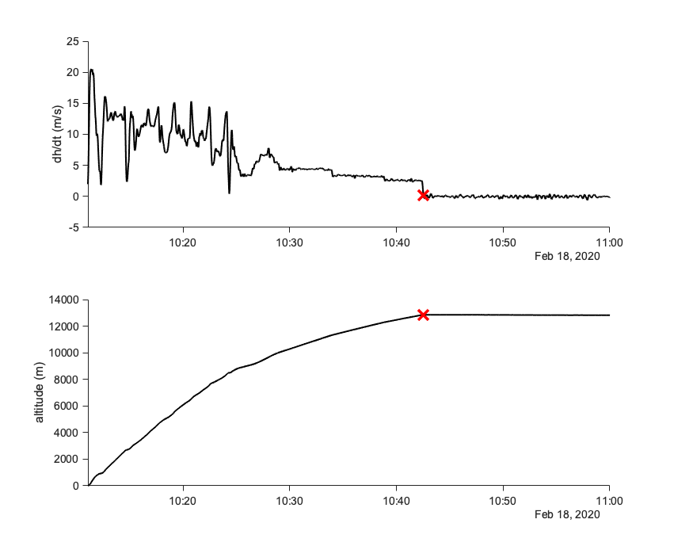
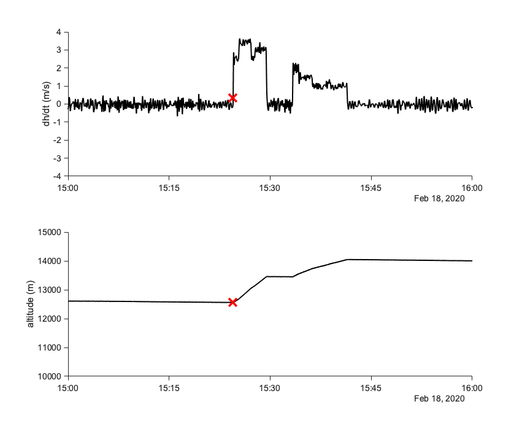
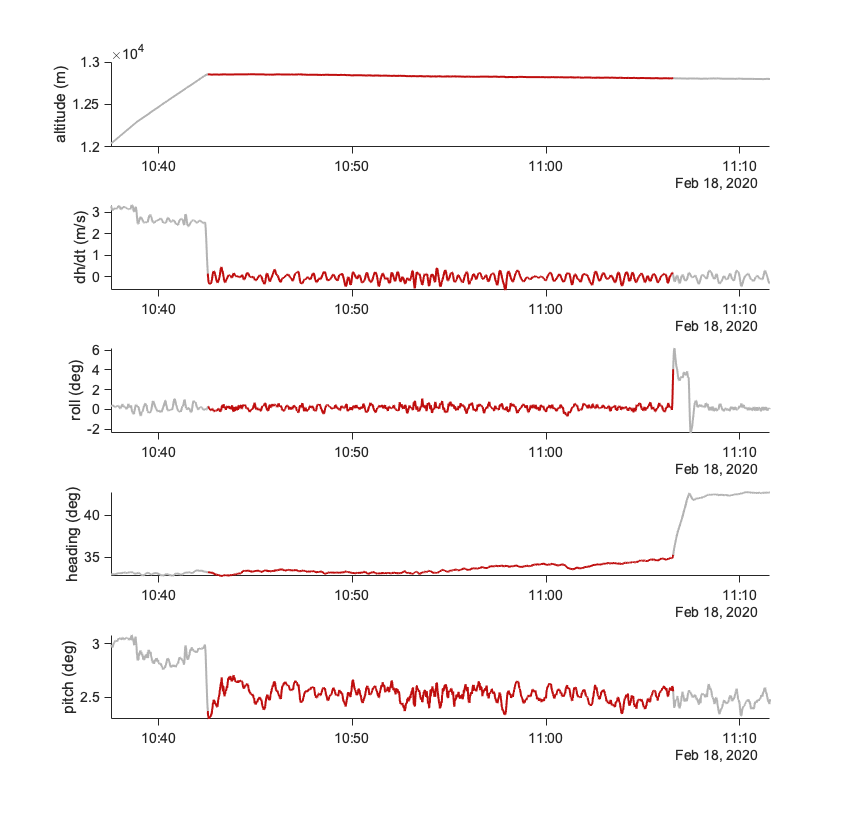
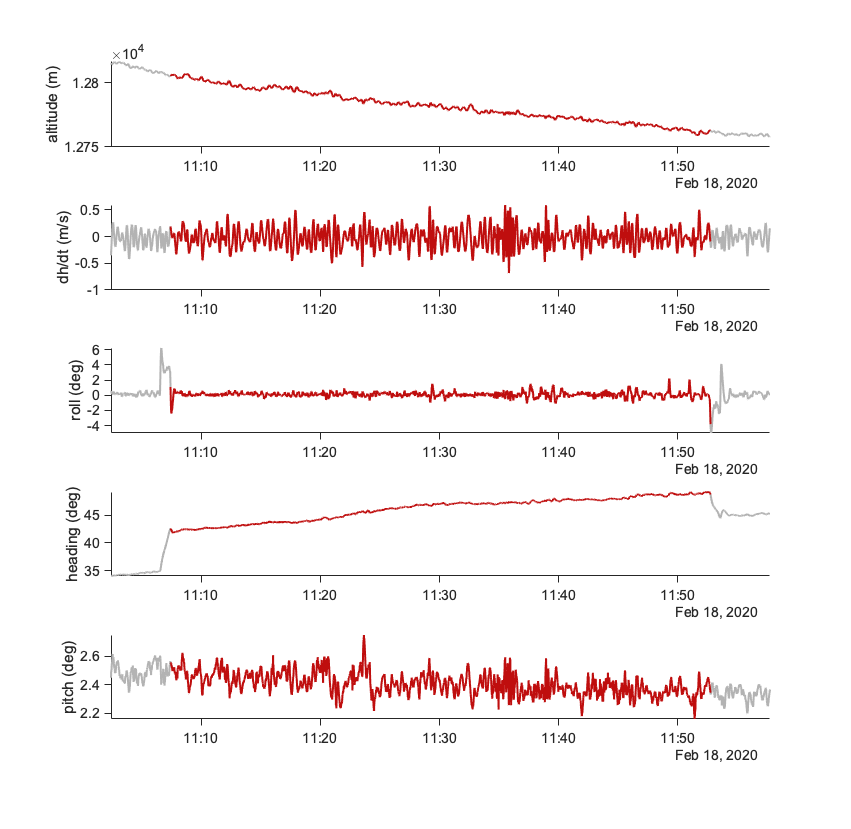
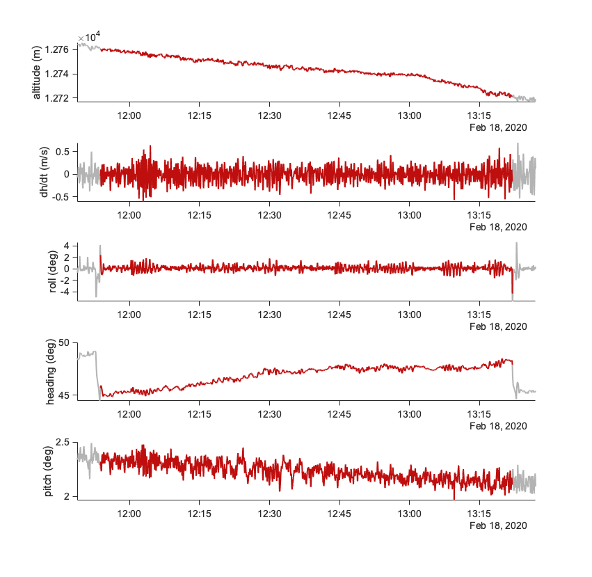
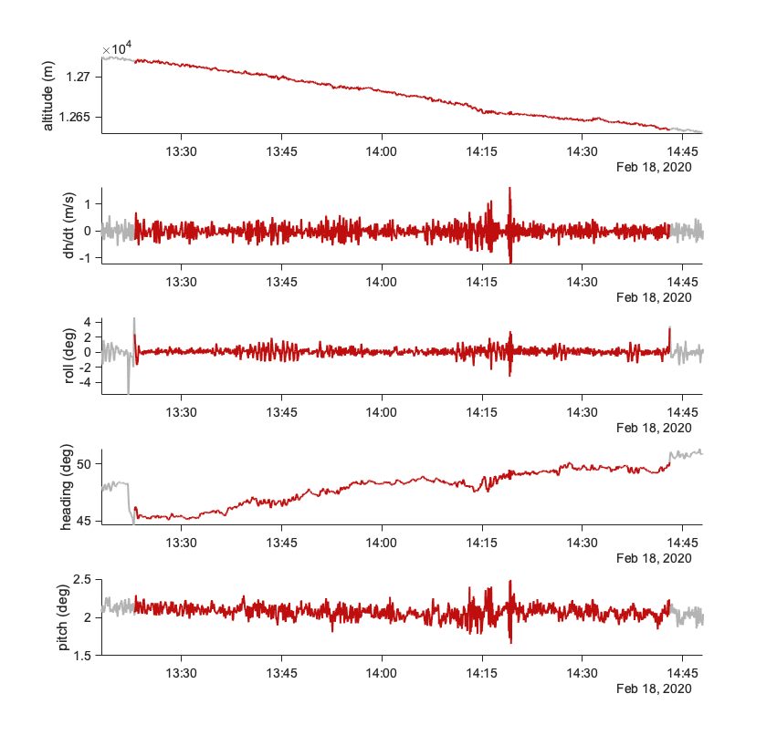

Contents
HALO_RF15_20200218_info
Code to identify flight segment for the HALO ferry flight from Barbados
to Oberpfaffenhofen. Only one straight leg segment is identified. The
later portion of the flight is omitted since it is far outside the
subtropics.
flightdate = '20200218';
Read data
basefolder = '/Users/heike/Documents/eurec4a/data_processing/EUREC4A_campaignData/all_nc/';
bahamasfile = listFiles([basefolder '*bahamas*' flightdate '*.nc'], 'full', 'latest');
t = datetime(ncread(bahamasfile, 'time'), 'convertfrom', 'posixtime');
lat = ncread(bahamasfile, 'lat');
lon = ncread(bahamasfile, 'lon');
alt = ncread(bahamasfile, 'altitude');
roll = ncread(bahamasfile, 'roll');
pitch = ncread(bahamasfile, 'pitch');
head = ncread(bahamasfile, 'heading');
alt_dt = diff(alt);
Flight elements
disp(['takeoff: ' datestr(t(1), 'yyyy-mm-dd HH:MM:SS')])
disp(['landing: ' datestr(t(end), 'yyyy-mm-dd HH:MM:SS')])
takeoff: 2020-02-18 10:11:05
landing: 2020-02-18 18:55:31
Flight path
fh(1) = figure(1);
set(fh(1),'Position', [223 406 725 506])
x = initMap([12 50], [-60 15]);
x.XLabel.Visible = 'on';
x.YLabel.Visible = 'on';
ah = plotm(lat, lon, 'k', 'Linewidth', 2);
xlabel('Longitude')
ylabel('Latitude')
finetunefigures
setFontSize(gcf, 14)
grid on
box on

Flight overview
fh(2) = plotAttitude(2, [], t, alt, alt_dt, roll, head, pitch, [0 0 0]);

Segment start: straight leg
ind_end_ascent = find(abs(alt_dt)<0.3, 1, 'first');
fh(3) = figure(3);
set(fh(3), 'Position', [499 51 851 689])
subplot(2,1,1)
plot(t(1:end-1), alt_dt, '-k', 'LineWidth', 2)
hold on
plot(t(ind_end_ascent-1), alt_dt(ind_end_ascent), 'xr', 'MarkerSize', 18, 'LineWidth', 4)
hold off
xlim([t(1) datetime(2020,2,18,11,0,0)])
ylabel('dh/dt (m/s)')
finetunefigures
subplot(2,1,2)
plot(t(1:end-1), alt(1:end-1), 'k', 'LineWidth', 2)
hold on
plot(t(ind_end_ascent-1), alt(ind_end_ascent-1), 'xr', 'MarkerSize', 18, 'LineWidth', 4)
hold off
xlim([t(1) datetime(2020,2,18,11,0,0)])
ylabel('altitude (m)')
finetunefigures
removeScientificLabel(gca, 'y')

Segment end: straight leg
ind_climb = find(t(1:end-1)>datetime(2020, 02, 18, 15, 22, 00)&alt_dt>0.5, 1, 'first')-1;
fh(4) = figure(4);
set(fh(4), 'Position', [499 51 851 689])
subplot(2,1,1)
plot(t(1:end-1), alt_dt, '-k', 'LineWidth', 2)
hold on
plot(t(ind_climb-1), alt_dt(ind_climb), 'xr', 'MarkerSize', 18, 'LineWidth', 4)
hold off
xlim([datetime(2020,2,18,15,0,0) datetime(2020,2,18,16,0,0)])
ylim([-4 4])
ylabel('dh/dt (m/s)')
finetunefigures
subplot(2,1,2)
plot(t(1:end-1), alt(1:end-1), 'k', 'LineWidth', 2)
hold on
plot(t(ind_climb-1), alt(ind_climb-1), 'xr', 'MarkerSize', 18, 'LineWidth', 4)
hold off
xlim([datetime(2020,2,18,15,0,0) datetime(2020,2,18,16,0,0)])
ylim([10000 15000])
ylabel('altitude (m)')
finetunefigures
removeScientificLabel(gca, 'y')

Look large roll
ind_roll = find(abs(roll(ind_end_ascent:ind_climb+2))>=3)+ind_end_ascent;
dInd_roll = diff(ind_roll);
ind_rollBreak = find(dInd_roll>120);
segmentStart(1) = ind_end_ascent;
segmentEnd(1) = ind_roll(1)-1;
for i=1:length(ind_rollBreak)
segmentStart(i+1) = ind_roll(ind_rollBreak(i))+1;
segmentEnd(i+1) = ind_roll(ind_rollBreak(i)+1)-1;
irr{i} = '[]';
end
segmentEnd(4) = [];
segmentStart(5) = [];
irr{4} = '\n - Roll angle is larger during this segment, but without heading change. Probably turbulence';
for i=1:length(segmentStart)
fh(6+i) = plotAttitudeSegment(6+i, segmentStart(i):segmentEnd(i), t, alt, alt_dt, roll, head, pitch);
disp('- kinds:')
disp(' - straight_leg')
disp([' name: Constant altitude transfer leg ' num2str(i)])
fprintf([' irregularities: ' irr{i} '\n'])
disp([' segment_id: HALO-0218_sl' num2str(i)])
disp([' start: ' datestr(t(segmentStart(i)), 'yyyy-mm-dd HH:MM:SS')])
disp([' end: ' datestr(t(segmentEnd(i)), 'yyyy-mm-dd HH:MM:SS')])
end
- kinds:
- straight_leg
name: Constant altitude transfer leg 1
irregularities: []
segment_id: HALO-0218_sl1
start: 2020-02-18 10:42:32
end: 2020-02-18 11:06:34
- kinds:
- straight_leg
name: Constant altitude transfer leg 2
irregularities: []
segment_id: HALO-0218_sl2
start: 2020-02-18 11:07:24
end: 2020-02-18 11:52:46
- kinds:
- straight_leg
name: Constant altitude transfer leg 3
irregularities: []
segment_id: HALO-0218_sl3
start: 2020-02-18 11:53:46
end: 2020-02-18 13:22:00
- kinds:
- straight_leg
name: Constant altitude transfer leg 4
irregularities:
- Roll angle is larger during this segment, but without heading change. Probably turbulence
segment_id: HALO-0218_sl4
start: 2020-02-18 13:23:00
end: 2020-02-18 14:43:03
   
Flight path: straight leg
fh(6) = figure(6);
set(fh(6),'Position', [223 406 725 506])
x2 = initMap([12 50], [-60 15]);
plotm(lat, lon, 'Linewidth', 2, 'Color', [.7 .7 .7]);
hold on
plotm(lat(segmentStart(1)-1:segmentEnd(1)-1), lon(segmentStart(1)-1:segmentEnd(1)-1), 'Linewidth', 4, 'Color', [231 160 36]./255);
plotm(lat(segmentStart(2)-1:segmentEnd(2)-1), lon(segmentStart(2)-1:segmentEnd(2)-1), 'Linewidth', 4, 'Color', [191 14 14]./255);
plotm(lat(segmentStart(3)-1:segmentEnd(3)-1), lon(segmentStart(3)-1:segmentEnd(3)-1), 'Linewidth', 4, 'Color', [59 113 245]./255);
plotm(lat(segmentStart(4)-1:segmentEnd(4)-1), lon(segmentStart(4)-1:segmentEnd(4)-1), 'Linewidth', 4, 'Color', [129 130 51]./255);
xlabel('Longitude')
ylabel('Latitude')
x2.XLabel.Visible = 'on';
x2.YLabel.Visible = 'on';
finetunefigures
setFontSize(gcf, 14)
grid on
box on

Segment times: straight leg
disp(['start: ' datestr(t(ind_end_ascent), 'yyyy-mm-dd HH:MM:SS')])
disp(['end: ' datestr(t(ind_climb), 'yyyy-mm-dd HH:MM:SS')])
start: 2020-02-18 10:42:32
end: 2020-02-18 15:24:30
Functions
function ax = initMap(varargin)
if nargin==0
latlim = [10 16];
lonlim = [-62 -53];
else
isneg = cell2mat(transpose(cellfun(@(x) x<0, varargin, 'uni', 0)));
ind_lon = sum(isneg, 2)>0;
ind_lat = -ind_lon + [1;1];
latlim = varargin{ind_lat};
lonlim = varargin{ind_lon};
end
ax = axesm('MapProjection','mercator','MapLatLimit',latlim,'MapLonLimit',lonlim,...
'Grid','on','MeridianLabel','off','ParallelLabel','off','FontSize',20,...
'FontName','arial');
geoshow('worldcities.shp', 'Marker', '.', 'MarkerEdgeColor',[0 0 0])
land = shaperead('landareas','UseGeocoords',true);
geoshow(land,'facecolor',[.9 .9 .9], 'linewidth', 1)
geoshow('worldcities.shp', 'Marker', '.', 'MarkerEdgeColor',[0 0 0])
hold on
gridm('mlinelocation',5,'plinelocation',5)
box off
set(gca,'Visible','off')
set(gcf, 'color','white');
if nargin==0
ah(1) = annotation(gcf,'textbox',...
[0.669 0.84 0.1 0.04],...
'String',{'55° W'},...
'FitBoxToText','off');
ah(2) = annotation(gcf,'textbox',...
[0.05 0.181 0.1 0.04],...
'String',{'10° N'},...
'FitBoxToText','off');
ah(3) = annotation(gcf,'textbox',...
[0.268 0.84 0.1 0.04],...
'String',{'60° W'},...
'FitBoxToText','off');
ah(4) = annotation(gcf,'textbox',...
[0.05 0.701 0.1 0.04],...
'String',{'15° N'},...
'FitBoxToText','off');
for i=1:length(ah)
ah(i).FontSize = 20;
ah(i).EdgeColor = 'none';
ah(i).HorizontalAlignment = 'center';
ah(i).VerticalAlignment = 'middle';
end
end
end
function fh = plotAttitude(fNum, tIndex, t, alt, alt_dt, roll, head, pitch, color, varargin)
if isempty(tIndex)
tIndex = 1:length(t);
end
fh = figure(fNum);
set(fh,'Position', [485 228 851 829])
subplot(5, 1, 1)
if any(strcmp(varargin, 'hold'))
hold on
end
plot(t(tIndex), alt(tIndex), 'Color', color, 'LineWidth', 2)
finetunefigures
ylabel('altitude (m)')
if any(strcmp(varargin, 'lim'))
xlim([t(tIndex(1)) t(tIndex(end))])
end
subplot(5, 1, 2)
if any(strcmp(varargin, 'hold'))
hold on
end
plot(t(tIndex(1:end-1)), alt_dt(tIndex(1:end-1)), 'Color', color, 'LineWidth', 2)
finetunefigures
ylabel('dh/dt (m/s)')
if any(strcmp(varargin, 'lim'))
xlim([t(tIndex(1)) t(tIndex(end))])
end
subplot(5, 1, 3)
if any(strcmp(varargin, 'hold'))
hold on
end
plot(t(tIndex), roll(tIndex), 'Color', color, 'LineWidth', 2)
finetunefigures
ylabel('roll (deg)')
if any(strcmp(varargin, 'lim'))
xlim([t(tIndex(1)) t(tIndex(end))])
end
subplot(5, 1, 4)
if any(strcmp(varargin, 'hold'))
hold on
end
plot(t(tIndex), head(tIndex), 'Color', color, 'LineWidth', 2)
finetunefigures
ylabel('heading (deg)')
if any(strcmp(varargin, 'lim'))
xlim([t(tIndex(1)) t(tIndex(end))])
end
subplot(5, 1, 5)
if any(strcmp(varargin, 'hold'))
hold on
end
plot(t(tIndex), pitch(tIndex), 'Color', color, 'LineWidth', 2)
finetunefigures
ylabel('pitch (deg)')
if any(strcmp(varargin, 'lim'))
xlim([t(tIndex(1)) t(tIndex(end))])
end
end
function fh = plotAttitudeSegment(fNum, tIndex, t, alt, alt_dt, roll, head, pitch)
tIndexLong = [tIndex(1)-300:tIndex(1)-1, tIndex, tIndex(end)+1:tIndex(end)+300];
plotAttitude(fNum, tIndexLong, t, alt, alt_dt, roll, head, pitch, [.7 .7 .7], 'lim');
hold on
fh = plotAttitude(fNum, tIndex, t, alt, alt_dt, roll, head, pitch, [191 14 14]./255, 'hold');
end